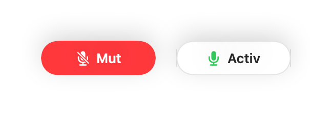

Cum dezactivați un apel Slack Huddle din orice aplicație pe Mac
Comenzile pentru Slack Huddle se află într-o fereastră mică pe care o puteți pierde ușor în spatele altor ferestre, iar comanda de mut funcționează doar când Slack este în prim-plan.
Muffle dezactivează microfonul pentru Slack și orice altă aplicație printr-o singură combinație de taste sau o apăsare pe AirPods, oriunde vă aflați pe Mac.
Dezactivați un apel Huddle de oriunde
- 1
Instalați Muffle și permiteți accesul la microfon.
- 2
Porniți sau participați la un apel Huddle în Slack.
- 3
Apăsați Control-Opțiune-M sau tija căștilor AirPods pentru dezactivare.
- 4
Aruncați o privire în bara de meniu: roșu înseamnă că nu vă aude nimeni.

- Mini controlerul plutitor afișează starea microfonului în timpul fiecărui apel.
- Țineți apăsată combinația de taste pentru a spune ceva rapid, rămânând altfel pe mut.
Întrebări frecvente
Funcționează atât cu aplicația Slack, cât și cu Slack în browser?
Da. Muffle dezactivează chiar microfonul, așadar funcționează în ambele.
Vor vedea colegii că am microfonul dezactivat?
Slack poate afișa în continuare microfonul ca activ. Colegii aud doar liniște cât timp Muffle vă ține pe mut.